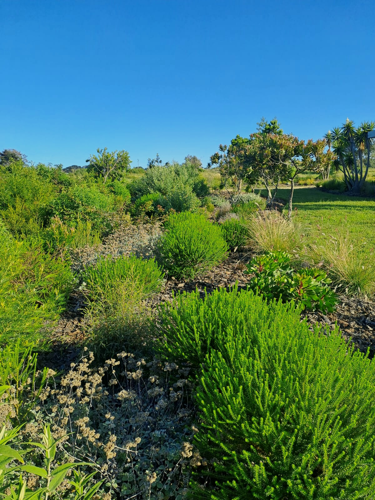

Clayton and Lisa came to us with a clear intention: they wanted their land to genuinely feed their family. Not a vegetable patch squeezed into a corner — but a properly designed, layered productive system that would grow, mature, and produce for decades. A food forest rooted in permaculture principles, designed for their specific microclimate, their soil, and the way they wanted to use the land.
The Design Brief
The site was an established smallholding on the Garden Route — enough land to do something meaningful with, but not so much that management would become overwhelming. The couple wanted the system to trend toward low-maintenance over time: a food forest that, once established, would largely manage itself. They were prepared to put work in during the establishment phase; the design needed to pay that back in abundance later.
The brief also included aesthetics. This wasn't a utilitarian vegetable operation — it needed to be beautiful, to feel like a designed landscape, to be a place you'd want to spend time in.
Layered Food Forest Design
Food forests work on the principle that natural woodland systems are inherently productive. The layered structure — canopy, sub-canopy, shrub layer, herbaceous, groundcover, root, and climber — creates a highly efficient use of space and energy. Each layer plays a functional role in the whole: shade regulation, soil building, nitrogen fixation, pest management, and food production.
For Clayton and Lisa's orchard, the canopy layer was established with a selection of subtropical fruit trees — avocados, macadamias, and selected citrus — providing both food production and structural shade that would, over time, create the right microclimate for the layers below. Below the canopy, a diverse sub-layer of smaller fruiting trees, feijoas, guavas, and loquats, fills the middle space.
The shrub and herbaceous layers are where the real density of production sits. This zone was planted with perennial food plants, nitrogen-fixing guild companions, aromatic herbs, medicinal plants, and groundcovers that simultaneously feed the soil and suppress weeds. The design minimises bare ground — in a natural system, bare soil is always covered, and that principle applies here too.
"It already feels completely different to what we had before. We're harvesting from it year-round and it's only been a few seasons."
Soil First
Before any planting, the soil was assessed and prepared. Every food forest begins with soil — it's the non-negotiable foundation. Compost, biochar, and appropriate mulch were incorporated in targeted zones. Keyline-inspired earthworks were used on the slope sections to slow, spread, and sink rainfall — keeping water in the system rather than losing it to runoff. Soil biology was prioritised: healthy fungi and bacteria doing their job means the trees and plants can do theirs.
Key Details
- 7-layer food forest structure from canopy to groundcover
- Subtropical fruit tree canopy — avocado, macadamia, citrus
- Dense guild planting: nitrogen-fixers, dynamic accumulators, pest-confusing aromatics
- Keyline-informed water management — rainfall harvested within the system
- Soil preparation with compost, biochar, and deep mulch
- Year-round harvest within three growing seasons

